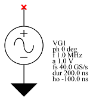

Voltage Sine Generator


| Property Name | Type | Keyword | Units | (Default) Value |
| default reference | string | VG? | ||
| reference | string | |||
| phase | float | ph | deg | 0 deg |
| frequency | float | f | Hz | 1.0 MHz |
| amplitude | float | a | V | 1.0 V |
| sample rate | float | fs | S/s | 40.0 GS/s |
| duration | float | dur | s | 200.0 ns |
| horizontal offset | float | ho | s | -100.0 ns |
The voltage sine generator is used in Simulation↑ applications to provide a voltage sine Waveform↓ to the system.
The waveform created has a sample rate as provided and extends in time from the horizontal offset, the time of the first point in the waveform, for the duration specified.
The waveform is such that it has the frequency specified and has the phase specified at time zero.